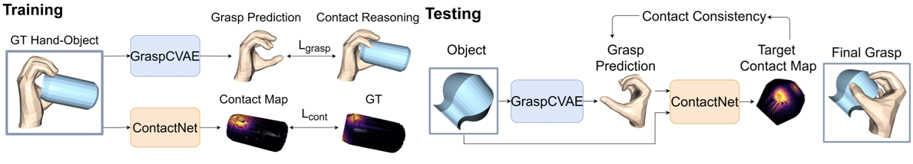
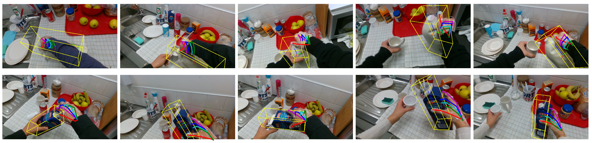

Research
Semi-Supervised 3D Hand-Object Poses Estimation
with Interactions in Time
Estimating 3D hand and object pose from a single image is an extremely challenging problem:
hands and objects are often self-occluded during interactions,
and the 3D annotations are scarce as even human cannot directly label the ground-truths from a single image perfectly.
To tackle these challenges, we propose a unified framework for estimating the 3D hand and object poses with semi-supervised learning.
We build a joint learning framework where we perform explicit contextual reasoning between hand and object representations.
Going beyond limited 3D annotations in a single image, we leverage the spatial-temporal consistency in large-scale hand-object videos
as a constraint for generating pseudo labels in semi-supervised learning.
Our method not only improves hand pose estimation in challenging real-world dataset,
but also substantially improve the object pose which has less ground-truths per instance.
By training with large-scale diverse videos, our model also generalizes better across multiple out-of-domain datasets.

Hand-Object Contact Consistency Reasoning
for Human Grasps Generation
While predicting robot grasps with parallel jaw grippers have been well studied and widely applied in robot manipulation tasks,
the study on natural human grasp generation with a multi-finger hand remains a very challenging problem.
In this paper, we propose to generate human grasps given a 3D object in the world.
Our key observation is that it is crucial to model the consistency between the hand contact points and object contact regions.
That is, we encourage the prior hand contact points to be close to the object surface
and the object common contact regions to be touched by the hand at the same time.
Based on the hand-object contact consistency, we design novel objectives in training the human grasp generation model
and also a new self-supervised task which allows the grasp generation network to be adjusted even during test time.
Our experiments show significant improvement in human grasp generation over state-of-the-art approaches by a large margin.
More interestingly, by optimizing the model during test time with the self-supervised task,
it helps achieve larger gain on unseen and out-of-domain objects.

Robot Grasps from Video Demonstration
Ongoing project, update soon.
